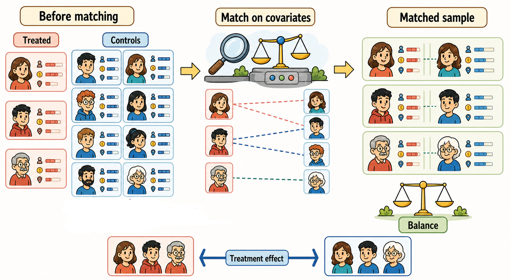

5 Selection on observable methods
Selection-on-observables methods rely on the idea that treatment assignment is non-random, but that the factors driving selection into treatment are observed in the data. If all confounders are observed and measured before treatment, where confounders are variables that jointly affect treatment assignment and potential outcomes, then differences between treated and untreated units can be adjusted for using pre-treatment covariates. Regression models implement this logic by adjusting outcome comparisons through control variables, while matching methods implement it by directly comparing treated units with untreated units that are similar in terms of observed pre-treatment characteristics. Both approaches therefore rely on the same central assumption: after conditioning on observables, there are no remaining unobserved confounders driving selection into treatment.
5.1 The linear regression model
The linear regression model is probably the most prominent tool in statistics and econometrics. In its simplest form, it describes the relationship between an outcome variable and one explanatory variable. In causal inference, this same tool can be used to estimate treatment effects, but only under specific assumptions. Dozens of excellent textbooks explain linear regression in detail, covering its statistical foundations, estimation, inference, diagnostics, and extensions. This chapter does not aim to provide a full treatment of the model. Instead, it focuses on its role in causal inference when embedded in the counterfactual approach. The key question is not only how to estimate a regression coefficient, but under what conditions that coefficient can be interpreted as a causal effect.
Suppose we observe a post-treatment outcome \(Y_i\) and a binary treatment indicator \(D_i\), where \(D_i=1\) for treated units and \(D_i=0\) for untreated units. A simple regression model can be written as
\[ Y_i = \alpha + \tau D_i + u_i. \]
In this model, \(\alpha\) is the average outcome for untreated units, while \(\tau\) captures the difference in average outcomes between treated and untreated units. The term \(u_i\) is the residual: the part of the outcome that is not explained by treatment status.
The parameters \(\alpha\) and \(\tau\) are usually estimated by ordinary least squares (OLS). In simple terms, OLS chooses the values of \(\alpha\) and \(\tau\) that make the predicted outcomes as close as possible to the observed outcomes, by minimizing the sum of squared residuals.
With a binary treatment and an intercept, the OLS estimate of \(\tau\) is equal to the difference in sample means between treated and untreated units:
\[ \widehat{\tau}_{OLS} = \bar{Y}_{D=1} - \bar{Y}_{D=0}. \]
At the population level, this corresponds to
\[ \tau = E[Y_i \mid D_i=1] - E[Y_i \mid D_i=0]. \]
This coefficient is simply a difference in mean outcomes between treated and untreated units. It has a causal interpretation only if this observed difference reproduces the comparison we would like to make between potential outcomes. This requires treatment assignment to be unrelated to potential outcomes, as in a randomized experiment.
In observational studies, treated and untreated units often differ for reasons that are not random. In these cases, the simple regression coefficient \(\tau\) does not necessarily isolate the causal effect of the treatment. It may combine the treatment effect with pre-existing differences between the two groups.
For this reason, simple regression is rarely enough to identify causal effects in observational settings. A more useful starting point is the multiple regression model:
\[ Y_i = \alpha + \tau D_i + X_i'\beta + u_i, \]
where \(Y_i\) is a post-treatment outcome, \(D_i\) is the treatment indicator, and \(X_i\) is a vector of observed pre-treatment covariates. These covariates should include variables that affect both treatment assignment and the outcome.
The timing of the variables is crucial. The covariates in \(X_i\) must be measured before treatment occurs, while the outcome \(Y_i\) must be measured after treatment. Otherwise, we may control for variables that are themselves affected by the treatment, changing the interpretation of the regression coefficient.
In this model, \(\tau\) compares treated and untreated units holding constant the covariates included in \(X_i\). The idea is that, after adjusting for relevant observed pre-treatment differences, the remaining difference in post-treatment outcomes may provide a credible estimate of the causal effect. For this interpretation to hold, several conditions are required.
All relevant confounders must be observed and adequately controlled for. If a variable affects both selection into treatment and the outcome but is omitted from the model, the OLS estimate may still be biased. This is the problem of omitted variable bias.
Covariates must be measured before treatment occurs. If we control for variables affected by the treatment, we may remove part of the treatment effect or introduce additional bias.
There must be sufficient overlap between treated and untreated units. For treated units, there should be comparable untreated units with similar values of the observed covariates. Without common support, the regression relies heavily on extrapolation.
The regression specification must be credible. OLS is a parametric adjustment method: it imposes a functional form for how covariates are related to the outcome. If this functional form is too restrictive, for example because important nonlinearities or interactions are omitted, the estimate may still be misleading.
For the ATT, the key selection-on-observables assumption is that, conditional on \(X_i\), treated and untreated units would have had comparable untreated potential outcomes:
\[ Y_i(0) \perp D_i \mid X_i. \]
This means that, after conditioning on observed pre-treatment covariates, untreated units can be used to approximate the missing counterfactual outcomes of treated units. Regression implements this idea by estimating the relationship between \(Y_i\), \(D_i\), and \(X_i\), and using it to adjust for observed differences in covariates.
Suppose we want to estimate whether installing speed cameras reduces the number of road accidents. The unit of analysis is a road segment. The treatment variable \(D_i\) is equal to 1 if road segment \(i\) receives a speed camera, and 0 otherwise. The outcome \(Y_i\) is the number of accidents observed after the installation period.
A first approach would be to estimate a simple regression model:
\[ Y_i = \alpha + \tau D_i + u_i. \]
In this model, \(\tau\) is simply the difference in average post-treatment accidents between roads with speed cameras and roads without speed cameras. This comparison would probably be misleading. Speed cameras are often installed on roads that were already more dangerous before the policy. These roads may have higher traffic volume, higher previous accident rates, different speed limits, or a different urban location.
For this reason, we may add observed pre-treatment characteristics to the model:
\[ Y_i = \alpha + \tau D_i + \beta_1 \text{Accidents}_{i,\text{pre}} + \beta_2 \text{Traffic}_{i,\text{pre}} + \beta_3 \text{SpeedLimit}_{i,\text{pre}} + X_i'\gamma + u_i, \]
where \(X_i\) may include other pre-treatment characteristics, such as road type, urban density, weather exposure, or nearby intersections. These controls are included because they may affect both the probability that a speed camera is installed and the number of accidents after installation.
In this model, \(\tau\) compares road segments with and without speed cameras holding constant these observed pre-treatment characteristics. The counterfactual logic is the following: for a treated road segment, the regression uses similar untreated road segments to predict how many accidents would have occurred without the camera. The estimated effect is the difference between the observed post-treatment outcome and this regression-adjusted counterfactual comparison.
This interpretation is causal only if, after conditioning on the included pre-treatment variables, the installation of speed cameras is as good as random.
The expression “holding constant” can be misleading when treated and untreated units are very different in their pre-treatment characteristics. In some applications, there may be no untreated units that are comparable to the treated ones for relevant values of \(X_i\).
For example, suppose speed cameras are installed only on extremely dangerous roads with very high pre-policy accident rates and very heavy traffic. If no untreated roads look similar, the regression model has to infer the counterfactual outcome by extrapolating from roads that are quite different. The model will still deliver an estimate of \(\tau\), because OLS always fits the best linear relationship in the available data. But the estimate may depend heavily on the imposed linear functional form rather than on an actual comparison between comparable treated and untreated units.
In that case, we cannot be sure that the regression has really kept all observed pre-treatment differences constant. It may simply be projecting what would happen for treated units outside the region where the data provide credible comparisons. This is a problem of lack of common support, which will be discussed more explicitly in the matching section.
In the end, it is important to remember that OLS regression is not born causal. It becomes a causal tool only when embedded in a credible research design and supported by assumptions that are often quite demanding. Without these assumptions, the estimated coefficient remains a conditional association, not a causal effect.
5.2 Matching Methods

Matching methods are among the most intuitive tools for causal inference with observational data. Their basic idea is simple: untreated units with similar observed pre-treatment characteristics are used to approximate what would have happened to treated units in the absence of treatment.
In this sense, matching constructs a control group ex post: the comparison group is formed only after treatment assignment has already taken place. Unlike in RCTs, treated and untreated units are not created by randomization. Instead, the control group is built by selecting untreated units that are comparable to the treated units in terms of observed pre-treatment characteristics.
Suppose we want to evaluate the effect of a policy on an outcome \(Y_i\). Let \(D_i=1\) indicate that unit \(i\) receives the treatment, and \(D_i=0\) otherwise. As usual, each unit has two potential outcomes:
\[ Y_i(1) \quad \text{and} \quad Y_i(0). \]
We are interested in the average treatment effect on the treated (ATT):
\[ ATT = E[Y_i(1)-Y_i(0)\mid D_i=1]. \]
Equivalently,
\[ ATT = E[Y_i(1)\mid D_i=1] - E[Y_i(0)\mid D_i=1]. \]
The first term is observed:
\[ E[Y_i(1)\mid D_i=1] = E[Y_i^{obs}\mid D_i=1]. \]
The second term is not observed. It is the average outcome that treated units would have experienced without treatment. Matching methods try to estimate this missing counterfactual by finding untreated units that are as similar as possible to the treated units before treatment in terms of relevant observed variables.
5.2.1 The Logic of Matching
The logic of matching is close to the logic of a randomized experiment. In an RCT, treated and untreated units are comparable because treatment is randomly assigned. In an observational study, treatment is not randomly assigned. Units may select into treatment, or policymakers may select units for treatment, based on characteristics that also affect the outcome.
Matching tries to make treated and untreated units comparable after the data have been collected. It does so by comparing treated units only with untreated units that have similar values of observed covariates \(X_i\).
For example, suppose we want to estimate the effect of an after-school tutoring program on students’ test scores. Students who attend the program may differ from non-participants in previous achievement, family background, motivation, teacher recommendations, or school attendance. Matching would compare each participating student with one or more non-participating students who are similar in terms of the observed pre-treatment variables.
Matching replaces the impossible comparison between treated units and their own missing counterfactual outcomes with a comparison between treated units and untreated units with similar observed pre-treatment characteristics.
5.2.2 Historical Intuition
The early intuition behind matching was close to the logic of experimental blocking. In an experiment, units may be grouped into blocks with similar characteristics before randomization. Matching applies a related idea to observational data: since treatment was not randomly assigned, the researcher tries to reconstruct comparability after the fact by pairing or grouping treated and untreated units with similar pre-treatment characteristics.
Early work focused on relatively direct forms of adjustment. One approach was subclassification, where units were divided into groups based on one or more covariates and comparisons were made within those groups. Cochran (1968) showed how subclassification could remove a large share of bias when the covariate used for adjustment was strongly related to selection into treatment and the outcome.
Rubin’s early work developed the logic of matched sampling more explicitly within the potential outcomes framework. The key idea was that a good matched comparison should make the distribution of pre-treatment covariates similar across treated and untreated groups, so that the remaining difference in outcomes could be interpreted more plausibly as a treatment effect (Rubin 1973a, 1973b). Cochran and Rubin (1973) also reviewed how matching, subclassification, and regression adjustment could be used to reduce bias in observational studies.
5.2.3 Conditional Independence Assumption
Matching is based on a key identifying assumption: the Conditional Independence Assumption. This is also called selection on observables or unconfoundedness.
For the ATT, the assumption can be written as
\[ Y_i(0) \perp D_i \mid X_i. \]
This means that, conditional on observed covariates \(X_i\), treatment assignment is independent of the untreated potential outcome. In words: once we compare units with the same observed characteristics, treated and untreated units would have had the same outcome in the absence of treatment.
Under this assumption,
\[ E[Y_i(0)\mid D_i=1, X_i=x] = E[Y_i(0)\mid D_i=0, X_i=x]. \]
Since untreated units reveal their untreated potential outcome,
\[ Y_i^{obs}=Y_i(0) \quad \text{when } D_i=0, \]
we can estimate the missing counterfactual for treated units using the observed outcomes of comparable untreated units.
Importantly, this assumption cannot be fully tested. What we can check is whether the matching process improved balance between the two groups, making them similar on average in terms of observed pre-treatment characteristics.
This is the crucial limitation of matching. If treated and untreated units differ in unobserved characteristics, such as motivation, ability, managerial quality, or political connections, and these characteristics also affect the outcome, then matching on observed variables is not enough to rule out selection bias.
Matching can adjust for differences in observed pre-treatment characteristics.
It cannot remove bias due to unobserved variables that affect both treatment assignment and the outcome.
5.2.4 Common Support
For the estimation of the ATT, a second key assumption is common support, also called overlap. For each relevant value of the covariates, there must be at least one untreated unit similar to each of the treated ones.
Formally,
\[ P(D_i=1\mid X_i=x) < 1. \]
This condition means that, for units with characteristics \(X_i=x\), treatment is possible but not certain. In other words, among units with the same, or sufficiently similar, observed characteristics, there must be at least some untreated units that can serve as comparisons for the treated units. If the probability of receiving treatment is equal to one for a given set of characteristics, matching cannot construct a credible counterfactual for those units.
In practice, lack of common support means that some units are too different to be matched. Dropping these units can improve credibility, but it also changes the population for which the treatment effect is estimated.
Matching requires treated and untreated units to overlap in terms of observed covariates.
Units outside the common support should not be used for causal comparisons.
5.2.5 Exact Matching
In the ideal case, each treated unit would be matched with untreated units that have exactly the same values of the covariates.
Suppose \(X_i\) contains age, education, and previous earnings. Exact matching would compare a treated individual only with untreated individuals that have the same age, the same education level, and the same previous earnings.
The matching estimator for the ATT can be described in three steps:
- Divide the data into groups defined by values of \(X_i\).
- Within each group, compute the difference between the average outcome of treated and untreated units.
- Average these differences using the distribution of \(X_i\) among treated units.
The last step is important. For the ATT, each treated unit receives the same weight. Therefore, covariate cells with more treated units receive more weight in the final estimate.
Formally, the ATT can be written as
\[ ATT = E_X \left[ E(Y_i\mid D_i=1,X_i) - E(Y_i\mid D_i=0,X_i) \mid D_i=1 \right]. \]
This expression highlights the core idea of matching: compare treated and untreated units within comparable covariate cells, and then average over the treated population.
For example, suppose we want to estimate the effect of a refresher training course on participants’ earnings. We perform exact matching using two binary pre-treatment covariates: whether the worker is young or older, and whether the worker lives in an urban or rural area.
This creates four covariate cells:
| Covariate cell | Treated workers | Mean earnings (€), treated | Mean earnings (€), untreated | Within-cell difference |
|---|---|---|---|---|
| Young, urban | 20 | 32 | 28 | 4 |
| Older, urban | 35 | 38 | 31 | 7 |
| Young, rural | 10 | 26 | 24 | 2 |
| Older, rural | 35 | 34 | 30 | 4 |
The ATT is not the simple average of the four within-cell differences. Averaging them mechanically would give 4.25 euros:
\[ \frac{4+7+2+4}{4}=4.25. \]
Instead, the ATT weights each cell by its share of treated units. Since there are 100 treated workers, the weights are 0.20, 0.35, 0.10, and 0.35:
\[ ATT = 0.20 \times 4 + 0.35 \times 7 + 0.10 \times 2 + 0.35 \times 4 = 4.85. \]
The reason is that the ATT asks: what is the average effect for the treated workers? Therefore, each treated worker receives the same weight. Cells with more treated workers contribute more to the final estimate.
5.2.6 The Curse of Dimensionality
Exact matching becomes difficult when the number of covariates increases. This is known as the curse of dimensionality.
If \(X_i\) contains many variables, it becomes increasingly unlikely to find untreated units with exactly the same covariate values as treated units. With continuous variables, exact matches may be almost impossible. Even with binary covariates, the number of possible covariate profiles grows very quickly.
For example, with 20 binary covariates, there are
\[ 2^{20} = 1{,}048{,}576 \]
possible covariate profiles.
This means that a very large dataset may be needed to find treated and untreated units in the same covariate cells. In practice, this makes exact matching infeasible in most applications.
5.2.7 Propensity Score Matching
A major solution to the curse of dimensionality is propensity score matching (PSM), introduced by Rosenbaum and Rubin (1983).
The propensity score is the probability of receiving the treatment conditional on observed covariates:
\[ p(X_i) = P(D_i=1\mid X_i). \]
Instead of matching units on all covariates \(X_i\), PSM matches units on the scalar index \(p(X_i)\).
Rosenbaum and Rubin showed that, if treatment assignment is independent of potential outcomes conditional on \(X_i\), then it is also independent of potential outcomes conditional on the propensity score:
\[ (Y_i(1),Y_i(0)) \perp D_i \mid X_i \quad \Rightarrow \quad (Y_i(1),Y_i(0)) \perp D_i \mid p(X_i). \]
This is the balancing property of the propensity score. Conditional on the propensity score, the distribution of observed covariates should be similar between treated and untreated units.
The propensity score reduces a multidimensional matching problem to a one-dimensional one.
Instead of matching on many covariates, we match on the probability of treatment.
5.2.7.1 Estimating the Propensity Score
In practice, the true propensity score is unknown and must be estimated. This is usually done by modelling treatment assignment as a function of pre-treatment covariates.
Common choices include:
\[ P(D_i=1\mid X_i) = \beta_0 + X_i'\beta \]
for a linear probability model,
\[ P(D_i=1\mid X_i) = \Phi(\beta_0 + X_i'\beta) \]
for a probit model, and
\[ P(D_i=1\mid X_i) = \frac{\exp(\beta_0+X_i'\beta)} {1+\exp(\beta_0+X_i'\beta)} \]
for a logit model.
The covariates included in \(X_i\) should be chosen carefully. They should be pre-treatment variables that affect treatment assignment and are plausibly related to the outcome. If panel data are available, lagged outcomes can often be useful because they capture pre-treatment differences in outcome levels.
Importantly, variables affected by the treatment should not be included in the propensity score model, because doing so would condition on post-treatment variables and may introduce bias.
5.2.7.2 Matching Rules
Once the propensity score has been estimated, we need to choose a criterion for matching treated and untreated units. In practice, propensity scores are usually continuous values between 0 and 1, often measured with many decimal places. For this reason, it is unlikely that one or more untreated units will have exactly the same propensity score as a treated unit.
Matching therefore usually relies on approximations: untreated units are selected because their propensity score is close to that of the treated unit, not because it is exactly identical. Different matching rules define what “close” means and imply different trade-offs between bias and precision. In what follows, we briefly discuss some of the most common matching rules.
Stratification matching. The range of the propensity score is divided into intervals, or strata. Within each stratum, treated and untreated units should have similar average propensity scores.
The treatment effect is estimated within each stratum as the difference in mean outcomes between treated and untreated units. These stratum-specific effects are then averaged, weighting by the number of treated units in each stratum.
If there are \(S\) strata, the estimator can be written as
\[ \widehat{ATT}_{strat} = \sum_{s=1}^{S} \frac{N_{1s}}{N_1} \left( \overline{Y}_{1s} - \overline{Y}_{0s} \right), \]
where \(N_{1s}\) is the number of treated units in stratum \(s\), \(N_1\) is the total number of treated units, and \(\overline{Y}_{1s}\) and \(\overline{Y}_{0s}\) are the average outcomes of treated and untreated units in that stratum.
One-nearest-neighbor matching. Each treated unit is matched to the untreated unit with the most similar propensity score.
For treated unit \(i\), the matched control is
\[ j(i) = \arg\min_{j:D_j=0} \left| \widehat p(X_i)-\widehat p(X_j) \right|. \]
The ATT is then estimated as the average difference between each treated unit and its matched control:
\[ \widehat{ATT}_{NN} = \frac{1}{N_1} \sum_{i:D_i=1} \left[ Y_i - Y_{j(i)} \right]. \]
Nearest neighbor matching can be implemented with or without replacement. With replacement, the same untreated unit can be used as a match for multiple treated units. This generally improves match quality, reducing bias, but it may increase variance.
A common extension is \(K\)-nearest-neighbor matching. Instead of selecting only the closest untreated unit, each treated unit is matched to the \(K\) closest untreated units, with common choices being \(K=3\) or \(K=5\).
Radius matching. Each treated unit is matched to all untreated units whose propensity score lies within a fixed distance, or radius.
For treated unit \(i\), the set of matched controls contains all untreated units \(j\) such that
\[ D_j = 0 \quad \text{and} \quad \left| \widehat p(X_i)-\widehat p(X_j) \right| \le r. \]
Here, \(r\) is the radius.
The choice of \(r\) involves a trade-off. A smaller radius improves comparability but may leave some treated units unmatched. A larger radius increases the number of matches but may include poorer matches, increasing bias. There is no universal choice of \(r\): it should be selected based on the scale of the propensity score, the quality of overlap, and balance diagnostics.
Kernel matching. The counterfactual outcome for each treated unit is constructed as a weighted average of untreated outcomes. Untreated units with propensity scores closer to that of the treated unit receive larger weights, while more distant units receive smaller weights or may receive no weight.
The bandwidth determines how quickly weights decline as the distance in propensity scores increases.
For treated unit \(i\), the counterfactual outcome is estimated as
\[ \widehat{Y}_i(0) = \sum_{j:D_j=0} w_{ij}Y_j, \]
where the weights \(w_{ij}\) depend on the distance between the propensity score of treated unit \(i\) and the propensity score of untreated unit \(j\).
The ATT is then
\[ \widehat{ATT}_{kernel} = \frac{1}{N_1} \sum_{i:D_i=1} \left[ Y_i - \widehat{Y}_i(0) \right]. \]
Kernel matching uses more information than nearest-neighbor matching because it constructs the counterfactual from a weighted average of several untreated units rather than from one or a few selected matches. However, the choice of bandwidth is important because it governs how strongly distance in the propensity score affects the weights.
Matching rules differ in how many untreated units are used to construct the counterfactual for each treated unit. Using only the closest control units can reduce bias, because comparisons are made between very similar units, but it may increase variance because little information is used.
Using more control units can improve precision, because the counterfactual is averaged over more observations, but it may increase bias if some of those controls are less comparable to the treated unit.
The choice of matching rule therefore reflects a trade-off: closer matches are usually more credible, while more matches usually provide more stable estimates.
5.2.8 Other Matching Approaches
The matching methods discussed so far are only part of a broader family of approaches. They all share the same basic goal: to construct a credible comparison group using observed pre-treatment characteristics. What differs is how similarity is defined, how observations are weighted, and how each method balances transparency, flexibility, bias, and precision. The aim here is not to cover all matching methods in detail, but to introduce the main intuition and briefly mention a few additional approaches.
Mahalanobis matching matches units using a multivariate distance measure computed directly on the covariates. Unlike propensity score matching, which reduces the covariates to a single scalar, Mahalanobis matching compares units in the original covariate space. The Mahalanobis distance between two units is based on the difference in their covariate values, adjusted by the covariance matrix of the covariates. In this way, differences are standardized and correlations among covariates are taken into account. It can work well when the number of covariates is limited, but it becomes less practical as the number of covariates increases.
For units \(i\) and \(j\), the Mahalanobis distance can be written as
\[ d(i,j) = \sqrt{(X_i-X_j)'S^{-1}(X_i-X_j)}, \]
where \(S\) is the covariance matrix of the covariates.
Coarsened exact matching first transforms covariates into substantively meaningful categories, or bins. For example, age may be grouped into age bands, income into income brackets, and firm size into size classes. Exact matching is then performed within these coarsened covariate cells. This approach is attractive because it is transparent: the researcher explicitly defines what counts as “similar.” The cost is that results may depend on how the covariates are coarsened.
Other approaches include genetic matching, entropy balancing and covariate balancing propensity scores.
5.2.9 Reweighting methods
Propensity scores can also be used in a different way. Instead of matching treated and untreated units with similar propensity scores, reweighting methods use the propensity score to assign different weights to observations. The goal is to create a weighted comparison group that is balanced in terms of observed pre-treatment characteristics.
The most common approach is inverse probability weighting (IPW). The basic idea is simple: units that are unlikely to receive the treatment they actually received are given more weight, because they are especially informative for constructing the counterfactual comparison.
For example, to estimate the average treatment effect, treated units are weighted by the inverse of their probability of receiving the treatment, while untreated units are weighted by the inverse of their probability of remaining untreated:
\[ w_i = \frac{D_i}{p(X_i)} + \frac{1-D_i}{1-p(X_i)}, \]
where \(p(X_i)=P(D_i=1 \mid X_i)\) is the propensity score.
Reweighting methods are similar to PSM because they rely on the same identifying assumptions, namely conditional independence and overlap, and use the propensity score to make treated and untreated units comparable in terms of observed pre-treatment characteristics. The difference lies in how the comparison is constructed: PSM selects untreated units that are similar to treated units, while reweighting methods usually keep all observations but change their relative importance through weights. In this way, weighting constructs a weighted pseudo-population in which treatment assignment is balanced with respect to observed covariates, rather than selecting a limited set of matched controls.
A key limitation is that weighting can be sensitive to extreme propensity scores. If some treated units have a very low probability of being treated, or some untreated units have a very high probability of being treated, their weights can become very large. For this reason, checking overlap and inspecting the distribution of weights are essential diagnostic steps.
In short, propensity score matching and reweighting methods share the same counterfactual logic, but implement it differently. Matching asks: which untreated units look most similar to the treated units? Weighting asks: how much weight should each unit receive to make treated and untreated groups comparable?
5.2.10 Assessing Match Quality
Matching should not end after estimating the ATT. A crucial step is checking whether matching actually improved balance between treated and untreated units.
The goal is not to predict treatment as well as possible. The goal is to make the distribution of pre-treatment covariates similar across groups after matching.
Common diagnostics include:
- comparing covariate means before and after matching;
- checking standardized mean differences;
- inspecting the distribution of the propensity score;
- verifying common support;
- reporting how many treated units are unmatched or discarded.
The ATT estimate produced by a matching estimator should be considered credible only if treated units and matched control units are sufficiently similar in their pre-treatment characteristics.
Before interpreting the estimated treatment effect, check whether matching has balanced the covariates.
If balance remains poor, the matched comparison group is not a credible counterfactual.
5.2.11 What Bias Does Matching Remove?
Matching can address two important sources of bias.
First, it can address lack of common support by excluding treated units that have no comparable untreated units. This avoids comparing units that are too different.
Second, it can address differences in the distribution of observed covariates by reweighting or selecting controls so that they resemble treated units.
However, matching cannot address selection on unobservables. If treatment assignment depends on variables that are not observed and that also affect the outcome, matching estimates may still be biased.
In other words, matching can help with bias due to observed differences between treated and untreated units, but not with bias due to unobserved differences.
Matching makes observational data look more like experimental data only with respect to observed variables.
It does not make treatment random with respect to variables that are unobserved.
5.2.12 Empirical Illustration
An example of matching in applied research is the study by Bovan et al. (2018) on the effect of natural disasters on voting behavior. The authors study whether voters punish politicians for events outside their control, focusing on floods in Croatia.
Flooded and non-flooded areas may differ systematically. For example, they may differ in socioeconomic conditions, geography, political preferences, or previous voting behavior. A simple comparison between flooded and non-flooded areas may therefore be misleading.
The study uses matching to compare affected and non-affected areas with similar observed characteristics. The balancing table below illustrates the logic of the procedure. Before matching, flooded municipalities differed substantially from non-flooded municipalities in several pre-treatment characteristics. After matching, these differences became much smaller.
| Variable | Flooded | Non-flooded, before matching | Absolute difference before matching | Non-flooded, after matching | Absolute difference after matching | ||
|---|---|---|---|---|---|---|---|
| Unemployment | 23.46 | 17.34 | 6.12 | 22.98 | 0.48 | ||
| Income per capita | 19,237.45 | 22,471.44 | 3,233.99 | 19,299.04 | 61.59 | ||
| Municipal income per capita | 1,340.43 | 2,220.85 | 880.42 | 1,196.84 | 143.59 | ||
| Education | 63.23 | 70.56 | 7.33 | 63.63 | 0.40 |
Before matching, floods appeared to reduce support for incumbent politicians. After accounting for differences in control variables through matching, the estimated flood effect disappeared.
This example illustrates the core logic of matching: part of what looks like a treatment effect may actually reflect pre-existing differences between treated and untreated units. Matching tries to reduce this problem by constructing a comparison group that is more similar to the treated group in terms of observed pre-treatment characteristics.
Matching methods and regression adjustment are closely related. Both try to make treated and untreated units comparable in terms of pre-treatment characteristics. They differ mainly in how they use the covariates.
Matching methods first construct a comparison group. Treated units are compared with untreated units that have similar values of the relevant pre-treatment covariates. The adjustment is therefore made by choosing which control units are used in the comparison.
Regression adjustment, instead, uses all observations and controls for covariates by specifying a model for the outcome. The adjustment is therefore made by modeling the relationship between covariates and the outcome.
The two approaches can also be combined. A common strategy is to first match treated and untreated units to improve covariate balance, and then estimate a regression model on the matched sample. In this case, matching reduces the dependence on functional-form assumptions, while regression adjustment can improve precision and correct remaining small imbalances.
The key difference is that matching is more transparent about the comparison being made: it shows which untreated units are used to approximate the counterfactual outcomes of treated units. Regression adjustment is more model-based: it relies more heavily on the assumed relationship between covariates and outcomes.
They also differ in how they handle failures of common support. With matching, lack of overlap is usually visible: treated units without comparable untreated units cannot be matched, or are matched only poorly. These units may then be excluded from the analysis, changing the population for which the effect is estimated. With regression adjustment, by contrast, the model can still produce predictions for treated units outside the support of the control group, but this requires extrapolation and makes the ATT estimate much more dependent on functional-form assumptions.
5.3 Summary
Matching methods estimate causal effects by comparing treated units with similar untreated units. They are especially useful when treatment is not randomly assigned but rich pre-treatment information is available.
The key assumptions are:
- Conditional Independence Assumption: after conditioning on observed covariates, treatment assignment is as good as random.
- Common support: treated units have comparable untreated units.
Matching is attractive because it is intuitive, transparent, and closely connected to the logic of randomized experiments. Its main weakness is that it relies on selection on observables. If important unobserved factors affect both treatment assignment and outcomes, matching alone cannot solve the identification problem.
Several software packages can be used to implement matching methods.
- R
- Python
- Stata